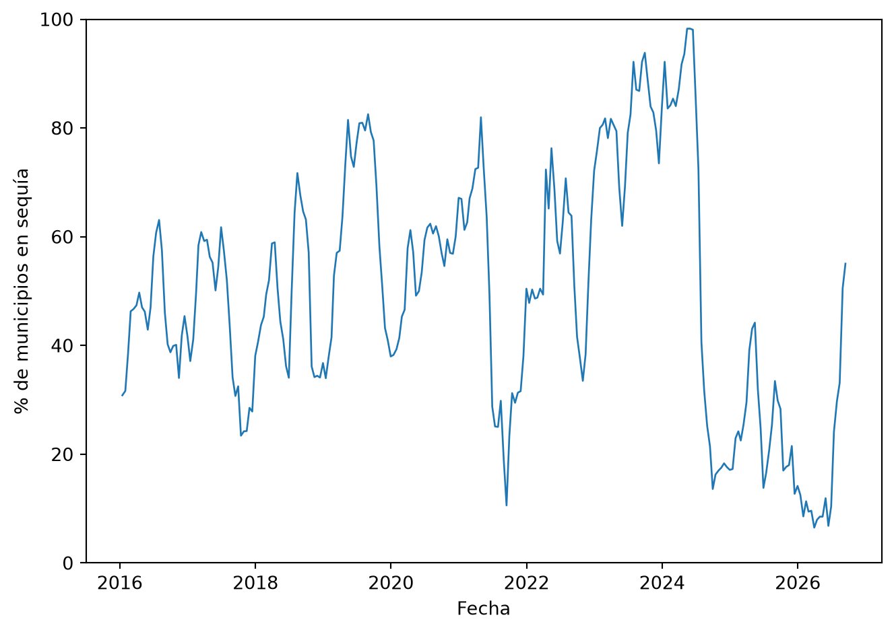

Esta sección documenta la preparación de la fuente de datos del proyecto: el Monitor de Sequía en México, publicado por el Programa Nacional Contra la Sequía (PRONACOSE). El archivo original viene en formato ancho: una fila por municipio y una columna por fecha de publicación del monitoreo, con la categoría de sequía observada (D0 a D4) o celda vacía.
Se generan dos productos a partir de la limpieza y procesamiento:
df_historico: serie completa 2003–2026 en formato largo, útil para gráficas de contexto de largo plazo (con la salvedad metodológica que se documenta más abajo).
df_analitico: subconjunto 2016 en adelante, con una columna para la fecha, definición metodológica consistente con frecuencia quincenal uniforme — este es el dataset que alimenta el EDA y el modelado.
Code
import numpy as npimport pandas as pdimport matplotlib.pyplot as pltfrom IPython.display import displaypd.set_option("display.max_columns", 10)# Ajustar esta ruta según el archivo del equipo.# Si usan la versión .xlsx, cambien esta línea por:# df = pd.read_excel("data/raw/MunicipiosSequia.xlsx")RUTA_DATOS ="../data/raw/MunicipiosSequiaCSV.csv"
Carga y estructura de los datos
Code
df = pd.read_csv(RUTA_DATOS, encoding="utf-8-sig", low_memory=False)df.columns = [c.strip() for c in df.columns]# Columnas de identificación del municipio (no son fechas)columnas_id = ["CVE_CONCATENADA", "CVE_ENT", "CVE_MUN", "NOMBRE_MUN", "ENTIDAD","ORG_CUENCA*", "CLV_OC", "CON_CUENCA", "CVE_CONC",]columnas_fecha = [c for c in df.columns if c notin columnas_id]print(f"Municipios: {df.shape[0]:,}")print(f"Columnas de identificación: {len(columnas_id)}")print(f"Columnas de fecha (periodos publicados): {len(columnas_fecha)}")print(f"Entidades federativas: {df['ENTIDAD'].nunique()}")
Municipios: 2,478
Columnas de identificación: 9
Columnas de fecha (periodos publicados): 435
Entidades federativas: 32
Diccionario de variables
Variables Geográficas
CVE_CONCATENADA: Clave del municipio (ID único).
CVE_ENT: Clave de la entidad federativa.
CVE_MUN: Clave del municipio.
NOMBRE_MUN: Nombre del municipio.
ENTIDAD: Nombre de la entidad federativa.
ORG_CUENCA*: Organismo de cuenca (el asterisco es parte literal del nombre de columna en el CSV original, no una nota al pie).
CLV_OC: Clave del organismo de cuenca.
CON_CUENCA: Consejo de cuenca.
CVE_CONC: Clave del consejo de cuenca.
Categorías de Severidad (Variable Objetivo)
Sin valor: Sin sequía (condiciones normales).
D0: Anormalmente seco.
D1: Sequía Moderada.
D2: Sequía Severa.
D3: Sequía Extrema.
D4: Sequía Excepcional.
Además de estas 9 columnas de identificación, el archivo original trae ~435 columnas de fecha (una por cada corte de publicación del monitoreo, p. ej. 31-ene-03, 15-sep-26), que se transforman a ser campso de información dentro de la columna fecha durante la limpieza y procesamiento (ver secciones siguientes).
Verificación de integridad
Code
duplicados = df["CVE_CONCATENADA"].duplicated().sum()nulos_id = df[columnas_id].isna().sum().sum()print(f"Claves de municipio duplicadas: {duplicados}")print(f"Valores nulos en columnas de identificación: {nulos_id}")assert duplicados ==0, "Hay CVE_CONCATENADA duplicadas"assert nulos_id ==0, "Hay nulos en columnas de identificación"
Claves de municipio duplicadas: 0
Valores nulos en columnas de identificación: 0
No se encontraron duplicados ni valores faltantes en las llaves de municipio, entidad o cuenca.
De nombres de columna a fechas reales
Los nombres de columna vienen como texto en español (31-ene-03, 15-sep-26), que pandas no reconoce de forma nativa. Se parsean manualmente para poder analizar la cobertura temporal.
Figure 1: Número de cortes de publicación del monitor por año
Se confirman: 12 cortes por año entre 2003 y 2013 (mensual) y ~24 cortes por año desde 2014 (quincenal). Este cambio de frecuencia complica comparar el periodo completo, pero hay un segundo reto, que es el de frecuencia, documentado a continuación.
Cambio metodológico en 2016: por qué no basta con re-muestrear
ImportantHallazgo clave de la documentación de la fuente
Según la nota metodológica que acompaña al dataset, la forma de asignar la categoría de sequía a un municipio cambió de definición, no solo de frecuencia:
2003–2015: se asignaba una categoría (D0 a D4) al municipio solo cuando esa condición cubría al menos 40% de su superficie.
2016 en adelante: se asigna la categoría de mayor intensidad observada en cualquier punto del municipio, sin importar qué porcentaje de su superficie cubre.
Esto significa que un mismo valor “D2” no es comparable antes y después de 2016: el criterio de 2003–2015 es más conservador (requiere afectación extendida) y el de 2016+ es más sensible (basta un punto afectado). Re-muestrear la frecuencia (mensual → quincenal) no resuelve este problema de fondo.
Decisión de limpieza: para el dataset analítico que alimenta el EDA y el modelado, se recorta la serie a partir de enero de 2016, donde la definición y la frecuencia (quincenal) son consistentes en todo el rango. El costo de esta decisión es perder 13 años de historia (2003–2015); a cambio se gana un dataset internamente comparable, que es indispensable para cualquier análisis de tendencia, clustering o modelado. La serie completa 2003–2026 se conserva aparte (df_historico) únicamente para gráficas de contexto de largo plazo, dejando explícita esta salvedad cada vez que se use.
Code
fecha_por_columna =dict(zip(columnas_fecha, fechas_cols))columnas_2016 = [c for c in columnas_fecha if fecha_por_columna[c] >= pd.Timestamp("2016-01-01")]print(f"Columnas totales: {len(columnas_fecha)}")print(f"Columnas a partir de 2016 (dataset analítico): {len(columnas_2016)}")print(f"Columnas descartadas (2003-2015, dataset histórico únicamente): "f"{len(columnas_fecha) -len(columnas_2016)}")
Columnas totales: 435
Columnas a partir de 2016 (dataset analítico): 256
Columnas descartadas (2003-2015, dataset histórico únicamente): 179
Al igual que en la exploración inicial, una celda vacía se interpreta como “sin sequía” (nivel 0), excepto en fechas donde el 100% de los municipios está vacío, que se tratan como hueco real de publicación del monitor y se dejan como NaN en vez de 0.
Code
frac_vacio = df[columnas_fecha].isna().mean()huecos_publicacion = frac_vacio[frac_vacio ==1.0].index.tolist()print(f"Fechas con 100% de celdas vacías (hueco real de publicación): {huecos_publicacion}")
Fechas con 100% de celdas vacías (hueco real de publicación): ['31-ago-03', '29-feb-04']
Dataset histórico completo (formato largo, solo para contexto)
Se parte de las columnas 2016 en adelante y se pivotea a una sola columna fecha, exactamente como en la exploración inicial del equipo, con las etiquetas de intensidad ya resueltas.
Además del Monitoreo de Sequía (que mide el peligro: dónde y con qué severidad ocurre la sequía), se incorporan tres índices de vulnerabilidad municipal calculados por PRONACOSE/CONAGUA con metodología IPCC (2007): ambiental, social y económica. Esto permite pasar de un análisis de solo “dónde hay sequía” a uno de “dónde importa más” (riesgo = peligro × vulnerabilidad).
Code
# Ajustar rutas según la ubicación en el repositorioRUTA_VULN_AMBIENTAL ="../data/raw/vulnerabilidad_ambiental_municipal.csv"RUTA_VULN_SOCIAL ="../data/raw/vulnerabilidad_social_municipal.csv"RUTA_VULN_ECONOMICA ="../data/raw/vulnerabilidad_economica_municipal.csv"vuln_amb = pd.read_csv(RUTA_VULN_AMBIENTAL)vuln_soc = pd.read_csv(RUTA_VULN_SOCIAL)vuln_eco = pd.read_csv(RUTA_VULN_ECONOMICA)for nombre, d in [("ambiental", vuln_amb), ("social", vuln_soc), ("económica", vuln_eco)]: dup = d["cve_concatenada"].duplicated().sum() nulos = d.isna().sum().sum()print(f"{nombre}: {d.shape[0]} municipios, duplicados={dup}, nulos={nulos}")
municipios_sequia =set(df["CVE_CONCATENADA"])municipios_vuln =set(vuln_amb["cve_concatenada"])faltantes = df[~df["CVE_CONCATENADA"].isin(municipios_vuln)][["CVE_CONCATENADA", "NOMBRE_MUN", "ENTIDAD"]]print(f"Municipios con dato de vulnerabilidad: {len(municipios_vuln)} de {len(municipios_sequia)}")print(f"Municipios sin dato de vulnerabilidad ({len(faltantes)}):")display(faltantes)
Municipios con dato de vulnerabilidad: 2463 de 2478
Municipios sin dato de vulnerabilidad (15):
CVE_CONCATENADA
NOMBRE_MUN
ENTIDAD
16
2006
San Quintín**
Baja California
17
2007
San Felipe**
Baja California
34
4012
Seybaplaya**
Campeche
35
4013
Dzitbalché**
Campeche
207
7125
Honduras de la Sierra**
Chiapas
457
12082
Las Vigas***
Guerrero
458
12083
Ñuu Savi***
Guerrero
459
12084
Santa Cruz del Rincón***
Guerrero
460
12085
San Nicolás***
Guerrero
941
17034
Coatetelco**
Morelos
942
17035
Xoxocotla**
Morelos
943
17036
Hueyapan**
Morelos
1889
24059
Villa de Pozos***
San Luis Potosí
1908
25019
Eldorado***
Sinaloa
1909
25020
Juan José Ríos***
Sinaloa
Los municipios sin dato de vulnerabilidad son, casi todos, municipios de creación reciente (marcados con **/*** en NOMBRE_MUN), posteriores al cálculo del índice. Representan menos del 1% del total y se documentan como limitación: para esos municipios, las variables de vulnerabilidad quedarán como NaN tras el merge.
Figure 2: Distribución de categorías de vulnerabilidad por dimensión
Code
vuln = (vuln_amb.rename(columns={"probabilidad": "vulnerabilidad_ambiental","t_prob": "vulnerabilidad_ambiental_cat"}) .merge(vuln_soc.rename(columns={"probabilidad": "vulnerabilidad_social","t_prob": "vulnerabilidad_social_cat"}) [["cve_concatenada", "vulnerabilidad_social", "vulnerabilidad_social_cat"]], on="cve_concatenada") .merge(vuln_eco.rename(columns={"probabilidad": "vulnerabilidad_economica","t_prob": "vulnerabilidad_economica_cat"}) [["cve_concatenada", "vulnerabilidad_economica", "vulnerabilidad_economica_cat"]], on="cve_concatenada") .rename(columns={"cve_concatenada": "CVE_CONCATENADA","cve_rha": "CVE_RHA_VULN", "nom_rha": "NOM_RHA_VULN"}))df_analitico = df_analitico.merge(vuln, on="CVE_CONCATENADA", how="left")print(f"Filas en df_analitico tras el merge: {len(df_analitico):,}")print(f"Municipios sin vulnerabilidad tras el merge (NaN): "f"{df_analitico.loc[df_analitico['vulnerabilidad_ambiental'].isna(), 'CVE_CONCATENADA'].nunique()}")
Filas en df_analitico tras el merge: 634,368
Municipios sin vulnerabilidad tras el merge (NaN): 15
Resumen por municipio (hazard + vulnerabilidad, listo para clustering)
Se agrega el dataset analítico a nivel municipio: frecuencia de sequía (% de quincenas en D0+), intensidad media y máxima, y la racha más larga de quincenas consecutivas en sequía (persistencia), y se une con las tres dimensiones de vulnerabilidad.
Code
df_analitico["en_sequia"] = df_analitico["intensidad"] >0def racha_maxima(serie_bool: pd.Series) ->int:"""Longitud de la racha más larga de True consecutivos.""" grupos = (serie_bool != serie_bool.shift()).cumsum() tam_grupo = serie_bool.groupby(grupos).transform("size")returnint((tam_grupo * serie_bool).max())resumen_municipal = ( df_analitico.groupby(columnas_id, dropna=False) .agg(frecuencia_sequia_pct=("en_sequia", lambda s: s.mean() *100), intensidad_media=("intensidad", "mean"), intensidad_max=("intensidad", "max")) .reset_index())rachas = (df_analitico.sort_values("fecha") .groupby("CVE_CONCATENADA")["en_sequia"] .apply(racha_maxima) .rename("racha_maxima_quincenas"))resumen_municipal = resumen_municipal.merge(rachas, on="CVE_CONCATENADA")resumen_municipal = resumen_municipal.merge(vuln, on="CVE_CONCATENADA", how="left")display(resumen_municipal.sort_values("frecuencia_sequia_pct", ascending=False).head(10))print(f"\nMunicipios en resumen_municipal: {len(resumen_municipal):,}")
CVE_CONCATENADA
CVE_ENT
CVE_MUN
NOMBRE_MUN
ENTIDAD
...
vulnerabilidad_ambiental_cat
vulnerabilidad_social
vulnerabilidad_social_cat
vulnerabilidad_economica
vulnerabilidad_economica_cat
2311
30210
30
210
Uxpanapa
Veracruz de Ignacio de la Llave
...
Muy Baja
23.008501
Baja
4.98
Muy Baja
2192
30091
30
91
Jesús Carranza
Veracruz de Ignacio de la Llave
...
Baja
61.153502
Alta
50.79
Media
1421
20407
20
407
Santa María Chimalapa
Oaxaca
...
Muy Baja
56.681909
Media
77.55
Alta
1071
20057
20
57
Matías Romero Avendaño
Oaxaca
...
Muy Baja
55.115507
Media
16.12
Muy Baja
142
7059
7
59
Ocosingo
Chiapas
...
Media
91.027282
Muy Alta
31.44
Baja
1212
20198
20
198
San Juan Guichicovi
Oaxaca
...
Muy Baja
26.153094
Baja
5.05
Muy Baja
2171
30070
30
70
Hidalgotitlán
Veracruz de Ignacio de la Llave
...
Muy Baja
78.781367
Alta
36.96
Baja
418
12043
12
43
Metlatónoc
Guerrero
...
Muy Baja
96.994363
Muy Alta
74.72
Alta
1913
26004
26
4
Altar
Sonora
...
Media
53.333064
Media
86.35
Muy Alta
453
12078
12
78
Cochoapa el Grande
Guerrero
...
Muy Baja
99.999925
Muy Alta
1.32
Muy Baja
10 rows × 21 columns
Municipios en resumen_municipal: 2,478
Verificación de la transformación
Code
pct_quincenal = (df_analitico.groupby("fecha")["intensidad"] .apply(lambda s: (s >0).mean() *100))fig, ax = plt.subplots()ax.plot(pct_quincenal.index, pct_quincenal.values, linewidth=1)ax.set_xlabel("Fecha")ax.set_ylabel("% de municipios en sequía")ax.set_ylim(0, 100)plt.tight_layout()plt.show()

Figure 3: Porcentaje de municipios en sequía (D0+), quincenal, 2016-2026
Table 1: Distribución de categorías en el dataset analítico (2016+)
frecuencia
intensidad_desc
Sin sequía
318571
D0 Anormalmente seco
163950
D1 Sequía moderada
86342
D2 Sequía severa
41673
D3 Sequía extrema
19248
D4 Sequía excepcional
4584
Guardado de datos limpios
Code
df_historico.to_parquet("../data/processed/sequia_historico.parquet", index=False)df_analitico.to_parquet("../data/processed/sequia_analitico_2016.parquet", index=False)resumen_municipal.to_parquet("../data/processed/resumen_municipal.parquet", index=False)print("Archivos guardados en data/processed/")
Archivos guardados en data/processed/
Resumen de decisiones de limpieza
Llave de municipio (CVE_CONCATENADA): verificada como única, sin nulos en columnas de identificación.
Celda vacía → “sin sequía” (nivel ordinal 0), excepto en fechas donde el 100% de los municipios está vacío, tratadas como hueco real de publicación del monitor (NaN).
Cambio metodológico en 2016 (umbral de 40% de superficie → intensidad máxima observada): es un cambio de definición, no solo de frecuencia, y no puede corregirse re-muestreando. Se optó por recortar el dataset analítico a partir de 2016 para garantizar comparabilidad interna, conservando la serie completa aparte solo para contexto histórico.
Formato ancho → largo: una sola columna fecha por municipio-periodo (df_historico y df_analitico).
Severidad ordinal D0–D4 codificada 1–5, con etiqueta descriptiva completa (intensidad_desc).
Vulnerabilidad ante sequía (ambiental, social, económica; PRONACOSE/ CONAGUA, metodología IPCC 2007) se integra vía CVE_CONCATENADA. Cobertura de 2,463 de 2,478 municipios (99.4%); los faltantes son municipios de creación reciente, posteriores al cálculo del índice, y quedan como NaN.
Resumen por municipio (resumen_municipal): frecuencia, intensidad media/máxima y persistencia (racha más larga en sequía) de 2016 a la fecha, combinado con las tres dimensiones de vulnerabilidad — listo como insumo directo para el clustering territorial.
Con esto, data/processed/sequia_analitico_2016.parquet queda listo como insumo principal para el análisis exploratorio a nivel municipio-quincena; resumen_municipal.parquet es el insumo para el clustering territorial (peligro + vulnerabilidad); sequia_historico.parquet queda disponible únicamente para gráficas de contexto de largo plazo.